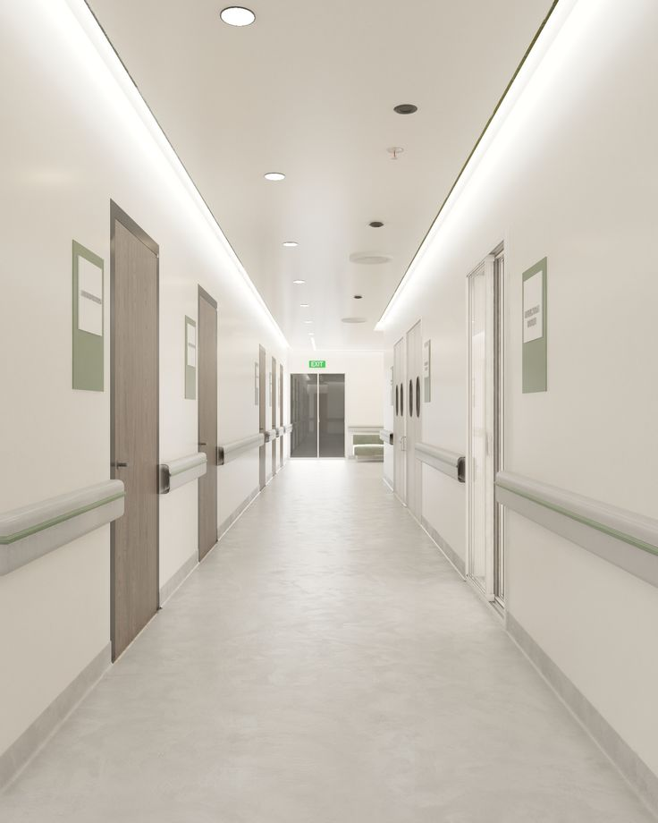
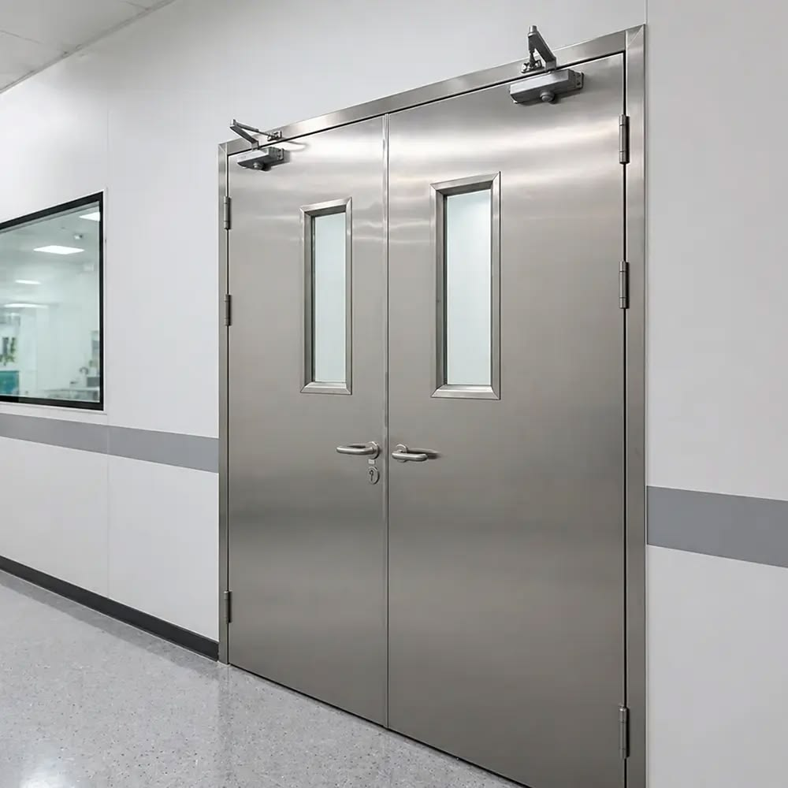
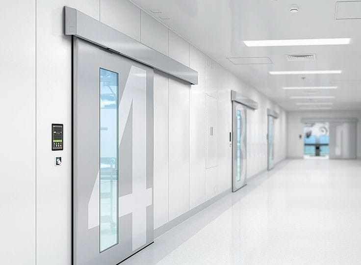
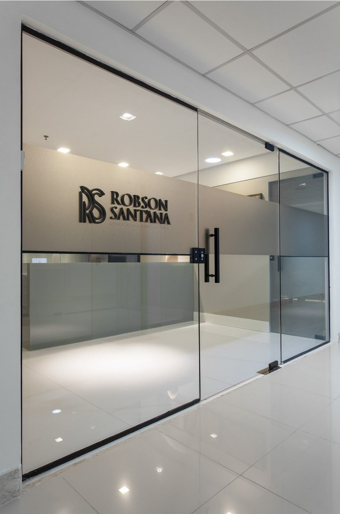
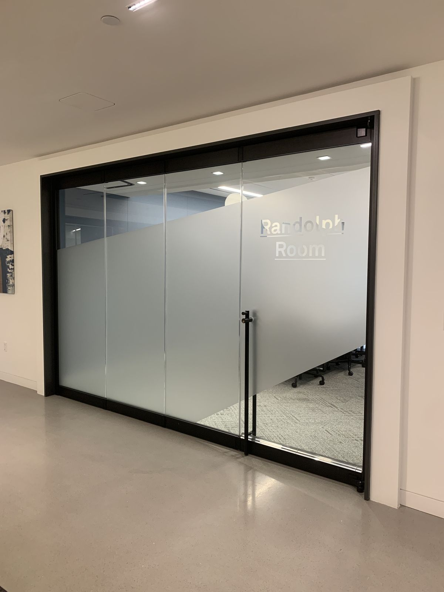
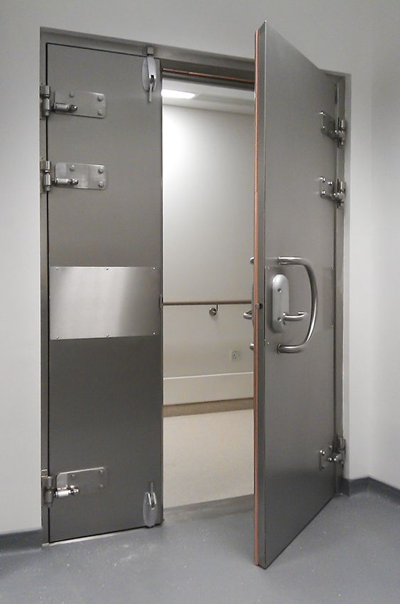
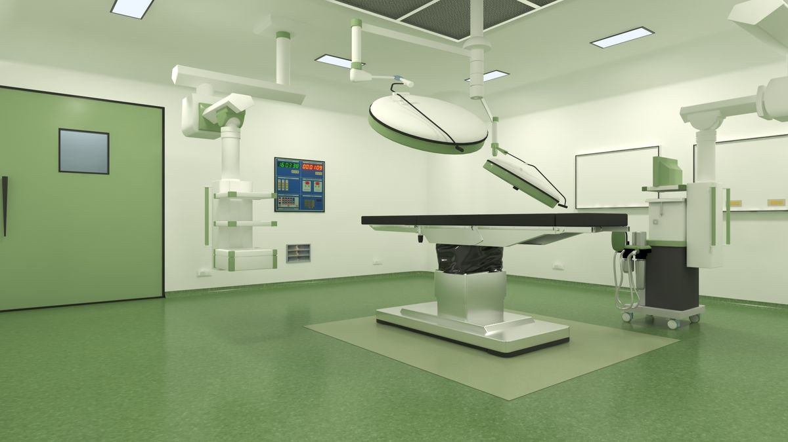
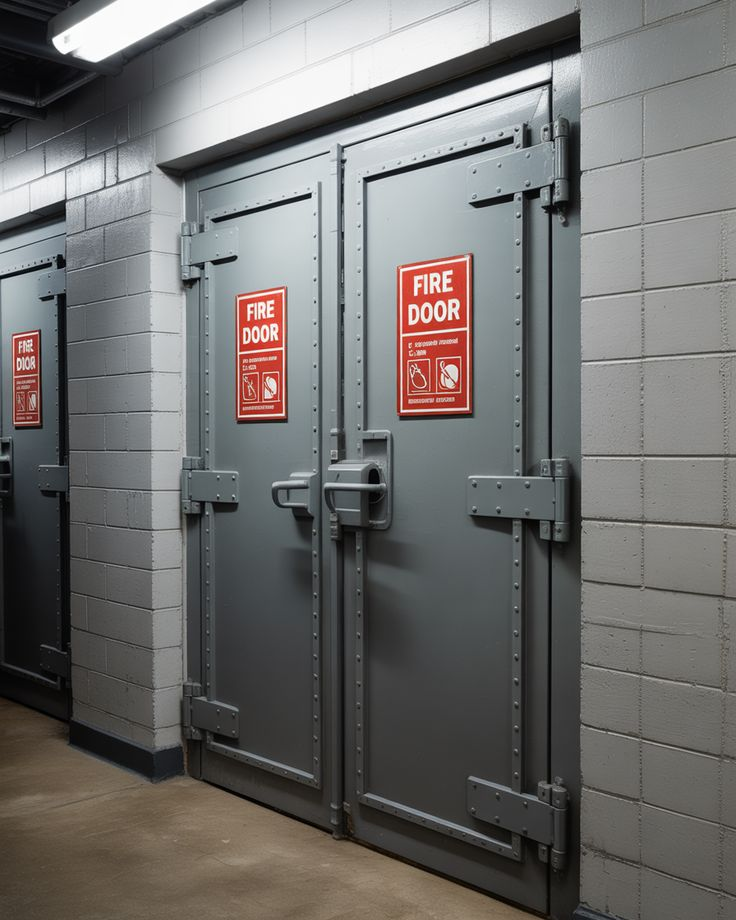
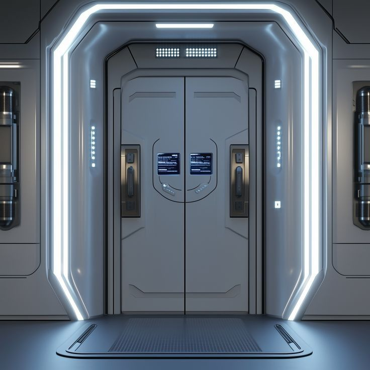
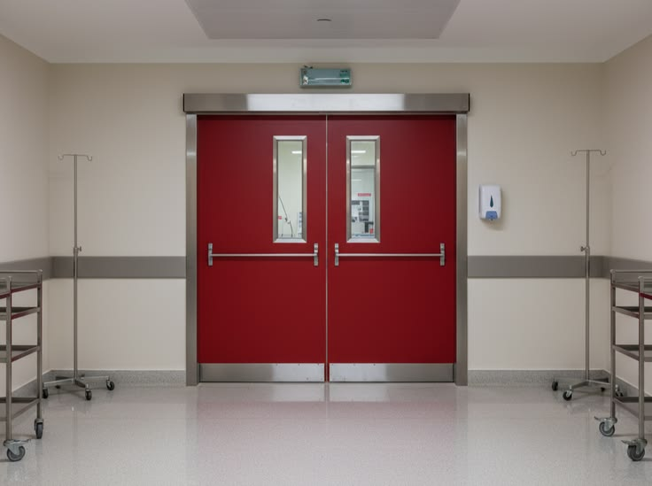

OM TRADING · REPRÉSENTATION ALPHA STONE EN ALGÉRIE
Portes techniques
& spécifiques
Solutions pour hôpitaux, blocs opératoires, zones techniques, bâtiments tertiaires et projets architecturaux.
← Retour à l’accueilCATALOGUE ALPHA STONE
Accès direct aux familles de portes.
GAMMES ALPHA STONE
Des portes classées par usage.
HWM
Portes hospitalières
Solutions destinées aux chambres, circulations et locaux hospitaliers. Configurations à un ou deux vantaux, avec oculus selon le besoin du projet.

HWS
Portes hospitalières techniques
Portes robustes pour zones médicales et passages à forte sollicitation. Les équipements et performances sont définis selon le dossier technique du projet.


MSD / HER
Portes coulissantes & hermétiques
Systèmes coulissants destinés notamment aux blocs opératoires, zones propres et environnements nécessitant une maîtrise des flux. Automatismes selon configuration.


PBL / PBH · RADIOPROTECTION
Portes anti-rayonnement
Solutions battantes ou coulissantes pour radiologie, imagerie et locaux nécessitant un blindage. L’équivalence plomb, le vitrage et les performances sont définis selon l’étude et les justificatifs techniques.


COUPE-FEU / PARE-FEU
Compartimentage & sécurité incendie
Portes métalliques à un ou deux vantaux, avec options d’oculus, ferme-porte et barre anti-panique. Le classement EI applicable est indiqué uniquement sur la base des certificats correspondant au modèle proposé.



PORTES SPÉCIFIQUES
Contrôle d’accès intelligent
Intégration possible de solutions de contrôle d’accès : empreinte digitale, code, badge, reconnaissance faciale, interphonie et commande connectée, selon compatibilité et cahier des charges.


Images d’ambiance illustratives : les équipements exacts sont confirmés dans l’offre technique ALPHA STONE.
GAMMES ALPHA STONE
Une lecture visuelle des solutions.
Accédez directement aux familles de portes techniques et hospitalières.
SOLUTIONS PAR ZONE HOSPITALIÈRE
Choisir la porte selon son application.
Cette lecture par usage complète les références produit et facilite la prescription pour les projets hospitaliers.
PRINCIPES TECHNIQUES
Coupes explicatives
Schémas de principe pour faciliter la lecture technique. Les épaisseurs, matériaux et performances définitifs restent ceux des fiches et plans approuvés ALPHA STONE.
Porte hospitalière battante
Porte coulissante hermétique
Porte coupe-feu
HYGIÈNE · RAPPORTS SGS DISPONIBLES
Essais de matériaux documentés.
Ces rapports sont présentés comme preuves d’essais sur les échantillons identifiés par SGS. Le rattachement à une référence de porte complète doit être confirmé par la documentation fabricant correspondante.
99,67 %
Verre — activité antivirale H1N1
ISO 21702:2019 · Rapport GZF20-027345-01.
>99,9 %
Acier inoxydable — activité antibactérienne
ISO 22196:2011 · E. coli & S. aureus · Rapport QDF20-041588-01.
OM TRADING · ALGÉRIE
Étudions votre projet.
Conseil · Fourniture · Pose · Service
0661 59 08 62contact@omtrading-dz.comSiège : Boudjemaa Temime, Draria, AlgerAtelier & Showroom : Zaouia, Blida